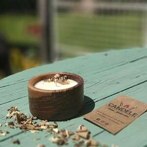

MS Torneria en madera
Productos torneados en madera
Encontra nuestra linea
Nosotros
MS Torneria nace como emprendimiento a cargo de Martin Soldati en la ciudad de Pergamino. Bajo la premisa de Productos de calidad, la eleccion de la madera y la atencion al detalle en la elaboracion y la terminacion de los trabajos, son los pilares de este desafio.
Algunos trabajos realizados


Contacto
Acceso a Redes sociales (la idea es implementar codigo para llevar directamente a la pagina de facebook e instagra - aun no me puse con eso)
CONTACTO